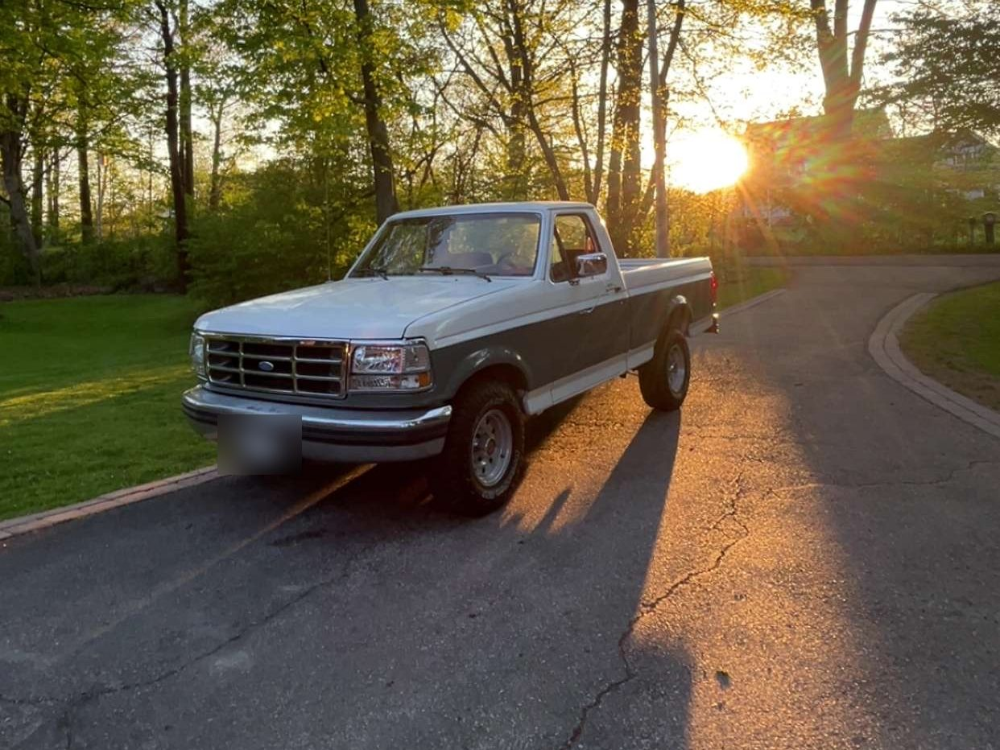
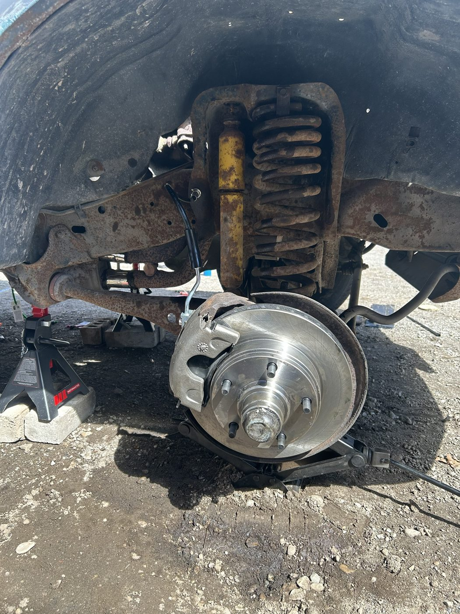
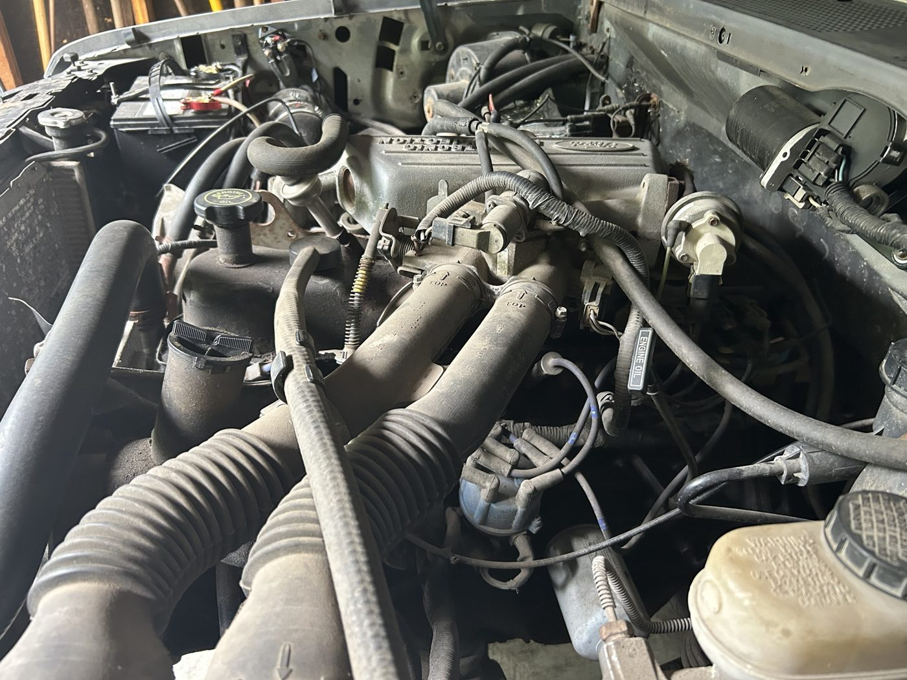
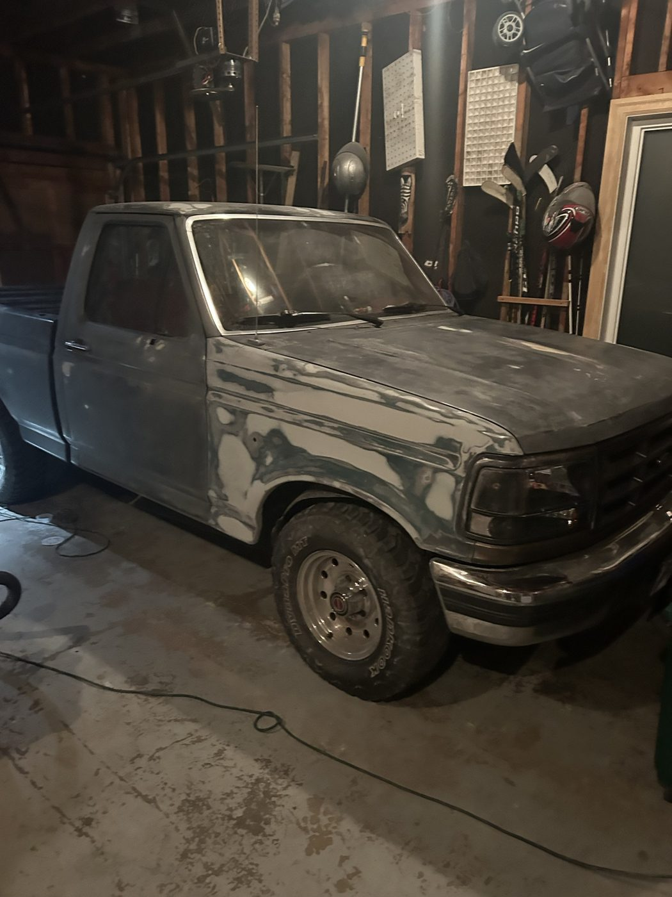

1992 Ford F-150: full restoration
- Problem
- Restore a 1992 F-150 that had worn bodywork, leaking gaskets, an unstable idle on the 300 (4.9L) inline-six and a failing brake system.
- Constraints
- Ford Factory Service Manual tolerances and torque specs
- OEM parts for the brakes
- Solution
- Valve cover gasket, injectors, ignition service and full fluid flush
- Full brake system rebuild: rotors, calipers, pads, lines, bleed
- Bodywork, primer and a full repaint
- Result
- The 300 inline-six now idles steadily with a sealed valve cover, clean injectors and a serviced ignition system. The brakes were rebuilt to Ford service manual specs with new rotors, calipers, pads and lines, and the repainted truck is back on the road.


